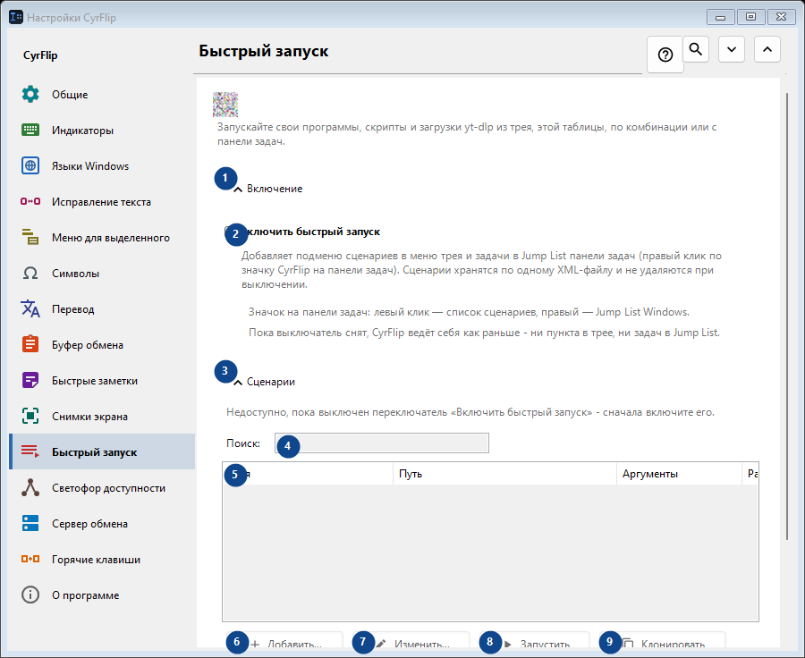
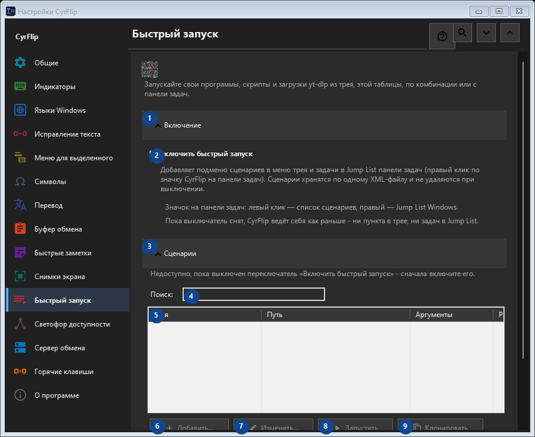

Быстрый запуск
Для чего это окно
Запускайте свои программы, скрипты и загрузки yt-dlp из трея, этой таблицы, по комбинации или с панели задач.


Порядок действий
Настройки применяются сразу. Обязательного порядка нет; используйте группы ниже.
Элементы
1. Включение
Используйте команду, когда нужно указанное действие. Прочитайте запрос подтверждения перед согласием.
Ваши сочетания клавиш2. Включить быстрый запуск
Добавляет подменю сценариев в меню трея и задачи в Jump List панели задач (правый клик по значку CyrFlip на панели задач). Сценарии хранятся по одному XML-файлу и не удаляются при выключении.
Ваши сочетания клавиш3. Сценарии
Используйте команду, когда нужно указанное действие. Прочитайте запрос подтверждения перед согласием.
Ваши сочетания клавиш4. Поиск
Недоступно, пока выключен переключатель «Включить быстрый запуск» - сначала включите его. Элемент сейчас недоступен. Сначала включите функцию или выберите запись.
Ваши сочетания клавиш5. Быстрый запуск
Недоступно, пока выключен переключатель «Включить быстрый запуск» - сначала включите его. Элемент сейчас недоступен. Сначала включите функцию или выберите запись. Имя / Путь / Аргументы / Рабочая папка / Админ / Комбинация
Ваши сочетания клавиш6. Добавить...
Недоступно, пока выключен переключатель «Включить быстрый запуск» - сначала включите его. Элемент сейчас недоступен. Сначала включите функцию или выберите запись.
Ваши сочетания клавиш7. Изменить...
Недоступно, пока выключен переключатель «Включить быстрый запуск» - сначала включите его. Элемент сейчас недоступен. Сначала включите функцию или выберите запись.
Ваши сочетания клавиш8. Запустить
Недоступно, пока выключен переключатель «Включить быстрый запуск» - сначала включите его. Элемент сейчас недоступен. Сначала включите функцию или выберите запись.
Ваши сочетания клавиш9. Клонировать
Недоступно, пока выключен переключатель «Включить быстрый запуск» - сначала включите его. Элемент сейчас недоступен. Сначала включите функцию или выберите запись.
Ваши сочетания клавиш10. Удалить
Недоступно, пока выключен переключатель «Включить быстрый запуск» - сначала включите его. Элемент сейчас недоступен. Сначала включите функцию или выберите запись.
Ваши сочетания клавиш11. Переместить вверх
Недоступно, пока выключен переключатель «Включить быстрый запуск» - сначала включите его. Элемент сейчас недоступен. Сначала включите функцию или выберите запись.
Ваши сочетания клавиш12. Переместить вниз
Недоступно, пока выключен переключатель «Включить быстрый запуск» - сначала включите его. Элемент сейчас недоступен. Сначала включите функцию или выберите запись.
Ваши сочетания клавиш13. Экспорт...
Недоступно, пока выключен переключатель «Включить быстрый запуск» - сначала включите его. Элемент сейчас недоступен. Сначала включите функцию или выберите запись.
Ваши сочетания клавиш14. Импорт...
Недоступно, пока выключен переключатель «Включить быстрый запуск» - сначала включите его. Элемент сейчас недоступен. Сначала включите функцию или выберите запись.
Ваши сочетания клавиш15. Импорт из OneClickRunner...
Недоступно, пока выключен переключатель «Включить быстрый запуск» - сначала включите его. Элемент сейчас недоступен. Сначала включите функцию или выберите запись.
Ваши сочетания клавиш